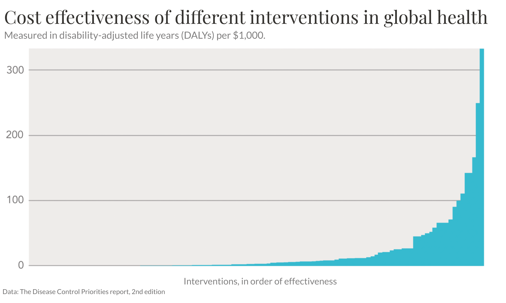

Data and development: Why are we building Our World in Data?
Stellenbosch University – 25 February 2022
www.OurWorldInData.orgScroll to our research: The world faces many large and urgent problems. Every day 15,000 children die. Child mortality is an everyday tragedy of enormous scale that rarely makes the headlines (read the post). The newspapers and media do not tell you the most important things going on in the world. The media focuses on events, but big problems are not events and progress against big problems happen slowly, not in events. We don't hear: what is terrible every day or what is getting slowly. Our goal is to complement the news media and focus on the big probems and the slow global changes.


I) The world’s biggest problems


II) Do people know that it is possible to make the world a better place?

Why do only few people know that progress is possible?


III) How can we make progress?
Three ways to make a difference:
• Your money
• Your political power
• Your career
• Your political power
• Your career


The most important thing to know when it comes to donating your money:at the very best charities your money goes much further than in other places.
